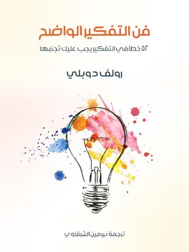

فن التفكير الواضح: ٥٢ خطأ في التفكير يجب عليك تجنبها

قراءة عربية أصلية محددة النطاق في الصفحات 9 إلى 14 من ملف PDF المرتبط، وليست تلخيصا كاملا للكتاب. نناقش ما تدعمه هذه المقاطع فقط.
خريطة فخاخ العقل الخفية
يروي دوبلي في مقدمته قصة المولد: مساء خريفي في ميونخ عام ٢٠٠٤، دعاه الناشر هوبرت بوردا إلى ما سماه تبادلًا عفويًا للخبرات مع المفكرين، فإذا به على المائدة بجوار نسيم نيكولاس طالب الذي كان وقتها تاجرًا غامضًا في وول ستريت. سحب طالب كرسيًا وأجلسه بجواره، وانسحب الحديث من ديفيد هيوم إلى وول ستريت، فاستمتعا بالحديث عن الأخطاء المنهجية التي يرتكبها الرؤساء التنفيذيون دون استثناء أنفسهم، وتضاحكا على المستثمرين العاجزين عن فكاك أسهمهم بعد هبوط سعرها. وكانت ثمرة ذلك الحوار أن أرسل إليه طالب مخطوط صفحات علق عليها دوبلي ونقد بعض أجزائها، لتصبح فيما بعد كتاب البجعة السوداء الذي حقق نجاحًا عالميًا. وراح يلتهم مراجع الأخطاء والاستدلال بالحدس حتى أدرك أنه أتمم دراسة حقيقية في علم النفس الاجتماعي والمعرفي. ثم يضبط مصطلحه: أخطاء التفكير هي انحرافات ممنهجة عن العقلانية، وكلمة ممنهج مهمة لأننا كثيرًا ما نخطئ في الاتجاه نفسه؛ فالمغالاة في تقدير معارفنا أشيع من التقليل من شأنها، وخطر فقدان شيء يحفزنا للحركة أسرع من إمكانية كسب شيء.
زاوية وحدود القراءة
قراءة موجزة من ص ٩ إلى ص ١٤ من أصل ٣٤٤ صفحة، تعرض مقدمة المؤلف وقصة نشأة الكتاب، لا الكتاب كاملًا.
الطبعة والقراءة
هذه الترجمة العربية صادرة ومتاحة مجانًا بموجب اتفاق قانوني بين مؤسسة هنداوي ودار نشر بيبر فريلاج. حقوق الترجمة محفوظة لمؤسسة هنداوي.
تنزيل PDF المجاني ↓ القراءة والمصدر الرسمي ↗